Investigating political framings in party manifestos
Authors
Daniel Hammarstedt
Javad Kouhestani Maklavani
Khoo Wei Yang
Teresa Cecylia Święćkowska
Published
January 11, 2026
Abstract
Post-2015 migrant crisis, Europe saw a rise polarization of political discourse on migration. While framings on either ends of the political spectrum were widely studied, how migration is framed in centrist political discourse is underexplored. We employ a three-step automated text analysis to examine the patterns of migration framing by centrist parties over time in selected European countries, utilizing manifesto as our main political text data. First, we conduct a sentiment analysis using NRC lexicon. Second, we fit a structural topic model with a periodized time covariate. Third, we estimate a regression to test the relationship between migration event and topic prevalence, inferred as framing patterns. We show that centrist framings of migration tend to be stable and positive. We also found framings (topic prevalence) is partially predicted by migration events. We show that, as opposed to simple dichotomies, migration is stratgically and complexly framed in centrist political discourse.
Introduction
Problem statement
Migration has been a polarizing and increasingly prominent political issue in the last three decades in West European countries and other developed nations. In the European context, a combination of extraordinary events (e.g. the ‘refugee crisis’ in 2015), there has been a sharp increase in the salience of immigration in political discourses with varied framings of the subject. Within political discourse, migration is framed differently by a multitude of political actors. Frames are “schemes of interpretation” in which political actors define particular problems (Helbling 2014). They are instrumental in shaping how people convey, interpret, and evaluate information (Greussing and Boomgaarden 2017).
Political framings of migration are important in shaping social attitudes on immigrants in liberal democracy. In recent decades, polarization of migration issues has driven sentiments and voting behavior in electoral politics across European countries. Radical right parties running hardline anti-immigration platforms have shown growing support among electorates (Coi 2024). Right-wing narratives often frame migration as a security threat, as an economic threat and as a cultural threat (Güler 2019). Parties that are on the left of the political spectrum tend to frame migration with social egalitarianism and solidarity defined in universalist terms (Alonso and Claro da Fonseca, n.d.).
Whereas political framings of migration are relatively stable and well-documented in migration discourses of left- and right-wing political actors, the political centers’ position on migration is less clear-cut and less systematically studied. Centrist parties often sit in between the left-right spectrum of ideologies, their emphasis on moderate politics and balanced mixture of left and right policies can lead to ambivalence on migration issues.
We are interested in how the subject of migration is framed in centrist party manifestos, influenced by migration events.
Literature review
Predominant frames of migration in European political discourse can be conceptualised using the dichotomy of security-oriented and humanitarian-oriented framings. On one hand, protecting the external borders is stressed, on the other, the importance of protecting human rights, solidarity and reciprocity.
Securitisation as defined by Jaskulowski (2019) as a discourse around migration constructing it as a threat to national security, economic stability and national identity. Veri and Maier (n.d.) finds that right-wing political leaders frame themselves as “defenders” of the native population, and appeal to securitisation framings of migration in engaging their electorates. Securitization is derived from making a conceptualised distinction between “us” and “them”. It frames the collective identity of the people in the country as challenged by the entering immigrants who assert new pressures on cultural and economic resources (Tallmeister 2013).
Another part of securitisation is the border protection emphasis. Tangible examples of that can be observed in the pushback during the 2015 migrant crisis by leaders of countries such as Hungary and Austria which have engaged in heavy deportations (Zaviršek 2017). Immediate responses deployed by these countries involve closing internal borders within the EU to in attempt to prevent the new border-crossings through the “Balkan route”against the Schengen agreement. Hence an EU border control agency Frontex was given special rights and obligations.
The comprehensive asylum procedure regulation (APR), introduced in 2023, Insofar as it acknowledges the rights of the migrants, it gives legitimacy to the state to deny applications if the migrant, even minors, “pose a security threat”. This shows how the securitisation narrative of migration and threat-framing materialised in EU institutions (Cantat 2016).
On the contrary, centrist politics in Europe have adopted a position of integration and assimilation with regards to migration since the 1960s, as a sensible alternative between the right-wing xenophobic nationalism and the radical anti-establishment discourses of the left (Favell 2001). The term integration, as Favell (2001) puts, evokes a change that is in a way “mutual and organic”. It speaks to the idea of modern society as unified and functioning only if cohesion is preserved as the alternative of “disintegrated society” leads to breakdown and conflict. Within integration framings, migrant cultures are portrayed as a threat that leads to conflict and breakdown of cohesion.. Rather than embracing multiculturalism and diversity, the differences need to be neutralised by assimilation to host culture. In this sense, integration framings of migration works within the securitisation logic.
Post-2015 migrant crisis, in 2018, Horst Seehofer, the leader of the Christian Social Union (CSU), the Bavarian sister party to Angela Merkel’s CDU referred to migration as the “mother of all political problems in the country”. He disagreed with Angela Merkel about open border policies and called for a cap for the number of migrants entering each year. This again suggests mainstream center parties showing more alignment with right wing framing of migration as a threat (Boswell and Hough 2008) rather than the humanitarian approach.
The humanitarian framing sits in diametric opposite to migration discourse around securitisation framings. Humanitarian framings put emphasis on solidarity among human beings, and the moral imperative of lending aid. According to Bauder and Juffs (2020), within the English enlightenment tradition, solidarity represents an expression of the “community of all of us”. According to Kantian ethics, it considers society as a whole and that would be consistent with moral law and applies universally. By pointing to humanity as a whole one cohesive community, humanitarian framings justify helping fellow human beings in need as a just and right course of action. Such an approach in addressing migration is more endemic to non-governmental organisations (Hilhorst et al. 2021), but in major Treaties underpinning the EU (Bandov and Gosovic 2018).
During the crisis, a large part of migration discourse revolves around solidarity with the refugees who are seen as fellow humans, in need of humanitarian aid. For example, London Labour Party representative Jeremy Corbyn had marched under the slogan “Refugees Welcome Here” (García Agustín and Jørgensen 2016), stressing that asylum-seeking as a recognized “fundamental right” in the EU, part of the 1951 Geneva Convention (European Commission 2025). Humanitarian framings underscores the human rights aspect of addressing migration, highlighting the obligation for states in ensuring refugees are treated with dignity and fairness as a part of human rights.
Framings of migration are promulgated through mass and social media as well as political communications. The discourse around migration is shaped by many actors from politicians, media outlets and people expressing their sentiment on social media. One way that discursive framings about migration can be studied is through political communications. Party election manifestos present an important site of discursive formation and investigation. These documents are official statements where the party addresses its electorate by elaborating on the policies and goals of governing when they assume office.
Research question
The two strands of security-oriented versus humanitarian-oriented framings are widely employed in centrist party political communications. We are interested in how framings shifted over time, influenced by objective and subjective experiences in migratory patterns, given the transformative moment of 2015 mass migration to Europe. We therefore ask the question of the extent to which we can identify these among the discourse of the centrist parties. We want to know
To what extent has the 2015 migration crisis caused a shift in the migration discourse of centrist EU political parties, and how does this shift manifest in the prevalence of security-oriented versus humanitarian-oriented frames?
Methodological design
The methodological design of this study follows two main logics for addressing the research questions:
What sentiment and topic trends emerge across the timeframes chosen for this study?
Which frames experience a change in their proportion across different timeframes?
To address these research questions, two main methodological pathways are designed for this study: exploratory analysis and regression analysis.
Exploratory analysis
In this step, an overall and longitudinal understanding of how each EU countries’ centrist party manifestos shape their political discourse around the nodal point of migration. For this purpose, the exploratory analysis of this study consists of two main steps: (1) sentiment analysis and (2) structural topic modelling.
Sentiment analysis
The sentiment analysis across time for the selected countries enables us to understand how the emotions of the immigrant-related statements have shifted during the past 25 years, and more specifically in the three timeframes of 1995-2003 (before mass immigration), 2004-2014 (EU enlargement and first waves of immigration), and 2015-2025 (since the beginning of war in the middle east).
Through the use of the NRC emotion lexicon, words in each document are matched to predefined sentiment and emotion categories using a dictionary-based approach (Mohammad and Turney 2013). The distribution of NRC emotion categories (e.g., fear, anger, trust) are visualized over time to facilitate interpretation of sentiment patterns in manifesto statements on migration.
Although the emotional dimension of the text gives important insights about the affective dimension of the political text, it does not show anything about the contents inside the corpora. To compensate for this limitation, we decided to add structural topic modelling in order to grasp more content-related dimensions of the corpora.
Structural topic modeling
Topic modelling is a computational method in text analysis that uncover the latent topics in the corpora by modelling word co-occurence probabilities (Grimmer et al. 2022). Through this method, words that appear together in the corpora constitute topics. Latent Dirichlet Allocation (LDA), for instance, models documents as mixtures of topics, where each topic is a probability distribution over words. We can view each manifesto as a mixture of multiple topics.
Through the exploration of the meaning and relation of these words together, and the support of theoretical frameworks, one can interpret what each topic is about, and accordingly, how these meaning constructs can form the overall topics seen in the corpora. This can be added on qualitative approaches at this stage to check the validity of the interpretations as well as strengthening the interpretation through the close readings (Gillings and Hardie 2023).
Defining frames
We interpret topics as frames, following the definition by Helbling (2014) and Greussing and Boomgaarden (2017), we see frames as latent “conceptual tools” or “schemes of interpretation” that lend to promoting a certain way of problem definition.
To uncover frames around the subject of migration, we delimit a subject boundary on migration using keywords related to migration. We then use only the set of keyword-matched documents as our corpus. This is similar to bounding the subject of the text using hashtags in social media text data or search keywords in scientometrics. Our selected keywords are in Listing 2.
Incorporating covariates
Conceptually, topics are a probability distribution of topic over a set of words. We can view frames as a set of words and concepts that were strategically used to guide interpretation of the subject. Given we have bounded our text to only migration-related documents (quasi-sentence, definition in Section 3), we interpret the topics modelled in our bounded corpus as frames used by centrist parties in shaping migration discourse.
Based on the purpose of this study, we want to incorporate the effects of document-level factors in the estimation of topics. We therefore choose STM, as the technique allows us to include time as covariate in estimate topics in the corpora. The model estimate document-topic proportion as a parameter, \(\theta\). Not only does \(\theta\) conceptually imply the prevalence of the topics in different timeframes, it enables measurement of an aspect of our corpora and estimation of relationship with independent variables. That is an invaluable affordability of this method because it opens the space for later analyses, using the theta score as an informative variable.
We utilise the \(\theta\) parameter in three different ways:
To estimate the prevalence of topics surrounding migrants over time;
Selecting the most representative quasi-sentences of each of the chosen topics and conduct manual content analysis on them. It is done in two aims: first, validity checks on our preliminary topic interpretations and labeling. Second, enriching the interpretation quality of our analysis, improving precision in exploratory understanding of the topics and their trends; and
Using them as a dependent variable in the regression analysis (next step) to infer effects of migration events (2015 migrant crisis) on framings.
Regression analysis
Even though the first stage of the methodology indicates crucial insights on the data, there are opportunities to examine relationship of external factors with topic distribution using the model parameter, topic prevalence \(\theta\). The main logic of this analysis comes from the understanding of STM as a dimension reduction method, whereby each document is represented by a dimensionally-reduced latent measure, in this case, \(\theta\). This method has been used in various STM studies in combination with structural equations modelling, correlation analysis or regression analysis.
Using the \(\theta\) of each document as the dependent variable, we analyze whether the variance of these numbers over time are significantly different. By this, the findings can illustrate if certain framings of migration (concluded through certain topics) have been rising or diminishing in different timeframes. In addition, this approach allows us to understand whether the increase and decrease in topic proportions are similar or different in distinct topics or not. Accordingly, we can find the co-occurrence patterns in different topics which show associations of the topics to one another.
Sampling strategy and methodological decisions
To address our research question, which involves examining changes in political framing of migration over time, given migration patterns in the EU, we want to effectively make comparisons across a stable set of observations over time, therefore enabling us to deduce the influence of migration patterns. At the same time, we are also constrained by the size and characteristics of corpus, the limits of covariates, and the properties of structural topic model and linear model. We describe our methodological choices in this section.
Time periodization
To determine the scope of our text data, we noted the need to compare across centrist party manifestos in multiple countries within the EU over time. We selected a timeframe of 25 years, which starts from the formation of EU in 1995 until most recent 2025. As a component of structural topic model, we produce a covariate of periodized timeframe by pooling data into three periods: 1995-2003 (before mass immigration), 2004-2014 (EU enlargement and first waves of immigration), and 2015-2025 (post-2015 migrant crisis). We assume that there are systematic difference in framings of migration in political discourse between these periods.
To avoid biased estimates in our regression analysis, we decided against treating time as a continuous covariate and instead pool the data by periods. This is in part because of the (1) instability of data availability for all years. As there are years with no elections, hence no published manifestos, there are limits in using a continuous time covariate, which will produce insufficient data points in some covariate levels. This aggregation method allow us to group data points (documents) together, and compare across reasonably-sized data points across all covariate levels.
We also do this as (2) periodization provide us with means of drawing inference on the effect of migration events. The assumption of systematic differences across the three timeframes allow us to treat our regression analysis as a hypothesis test for group means. Given that the periods are delimited by the start of a substantive migration event, we hold that general changes in socio-political environment during within the period following that event would have an effect on the prevalence of certain framings on migration. We describe this periodization in our pre-processing step Listing 1.
The current EU is made up of 27 countries, of which membership changes across time. on the EU-15 countries: Belgium, France, Germany, Italy, Luxembourg, Netherlands, United Kingdom, Spain, Austria, Sweden, Finland, Portugal, Greece, Ireland, and Denmark.
To motivate our selection, we also looked at Eurostat immigration flows (using the Eurostat dataset migr_imm8 via eurostat API) for 1998-2025. This exercise was done, not to mechanically select cases, but rather to highlight why our time period post-2015 is a key period.
We visualize both (1) annual immigration levels and (2) first differences (absolute year-to-year change) to identify broad patterns in immigration fluctuations across countries over time.
## selecting countries for analysis# EU + EFTA + UK – edit if needed)euefta_countries <-c("BE","BG","CZ","DK","DE","EE","IE","EL","ES","FR","HR","IT","CY","LV","LT","LU","HU","MT","NL","AT","PL","PT","RO","SI","SK","FI","SE","IS","NO","CH","LI","UK")# pre-2004 enlargement EU memberseu15_countries <-c("Belgium", "France", "Germany", "Italy", "Luxembourg", "Netherlands", "United Kingdom", "Spain", "Austria", "Sweden", "Finland", "Portugal", "Greece", "Ireland", "Denmark")# analysis of european immigration flow statisticsimm_data <-get_eurostat("migr_imm8", filters =list(age ="TOTAL", sex ="T", time =1998:2025),time_format ="num", type ="code")
imm_all <- imm_data %>%filter(agedef =="COMPLET", geo %in% euefta_countries) %>%label_eurostat(lang ="en") %>%rename(immigrant_num = values) %>%select(geo, time, immigrant_num) %>%group_by(geo) %>%arrange(time) %>%# Ensure years are in ordermutate(immigrant_cum =cumsum(immigrant_num),# compute first-difference to obtain absolute changeimmigrant_diff = immigrant_num -lag(immigrant_num), # perhaps we can use a longer lag?immigrant_diff =case_when(is.na(immigrant_diff) ~0, TRUE~ immigrant_diff)) %>%ungroup() %>%arrange(geo)# plot absolute change in immigrants over timeggplot(imm_all[imm_all$geo %in% eu15_countries,]) +geom_point(aes(x = time, y = immigrant_diff, color = geo)) +geom_line(aes(x = time, y = immigrant_diff, color = geo), alpha = .5) +labs(title ="Absolute change in immigrants over time, by country", y ="Differenced change in immigrants") +scale_color_viridis_d(option ="turbo") +theme_bw()# plot number of immigrants over timeggplot(imm_all[imm_all$geo %in% eu15_countries,]) +geom_point(aes(x = time, y = immigrant_num , color = geo)) +geom_line(aes(x = time, y = immigrant_num, color = geo), alpha = .5) +labs(title ="Number of immigrants over time, by country", y ="Number of immigrants") +scale_color_viridis_d(option ="turbo") +theme_bw()
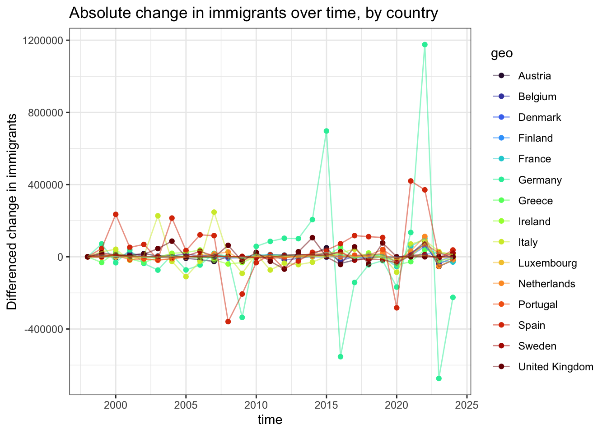
Figure 1: Absolute change in immigrants over time, by country
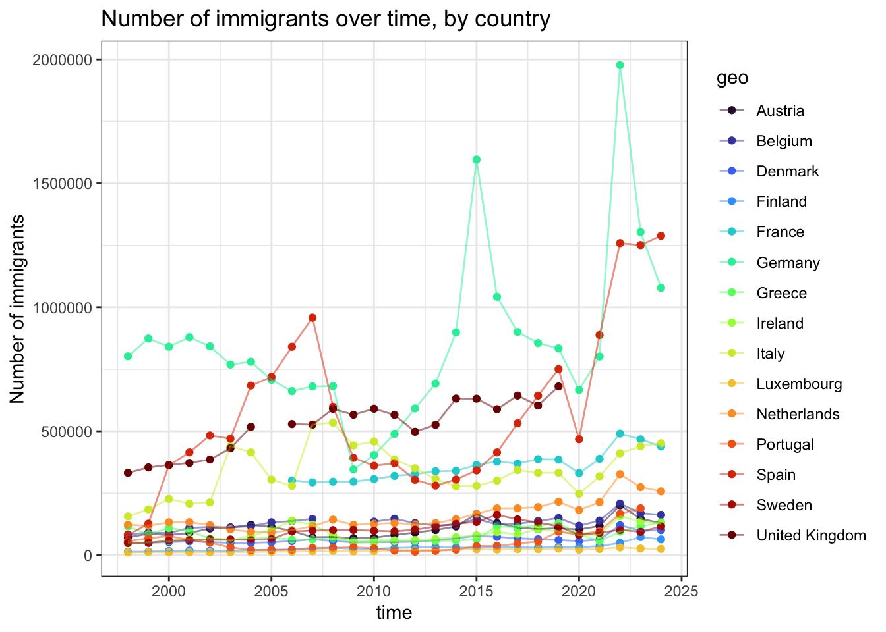
Figure 2: Number of immigrants over time, by country
We see that Germany and Spain experienced the biggest absolute fluctuation across time, followed by Italy, Netherlands and United Kingdom. In terms of absolute numbers of documented immigrants, Germany, Spain, United Kingdom, Italy, France and Netherlands were among the highest ranked overall. One important caveat is that these are documenteed numbers, there are key gaps in our data set as well.
In this study, we assume that all EU countries in our selection are similar in their effect on centrist framings on migration. While we noted that country may be an influential factor on migration discourse, as different cultural and socio-political context can shape discursive formation, for reasons of research question, data size and interpretability, we decide not to include country as a covariate, instead treating them as one pool. This is to ameliorate shortfalls in covariate balance, as well as not deviate from our research question.
Party selection
We define centrist parties as parties that fall between polar ends of left-right ideologies within electoral democracy.
Within these countries, we restrict the manifesto sample to moderate/centrist party families using MPDS party-family parfam codes:
30 SOC Social democratic parties
40 LIB Liberal parties
50 CHR Christian democratic parties (in Israel also Jewish parties)
60 CON Conservative parties
Selected party families are considered “centrist” based on their commonly moderate ideologies that contain a mixture of “middle-ground” policies, relative to far-left and far-right parties which we consider to explicitly exhibit ideological leanings. We also make a point to include parties that are consideed center-left like social democratic parties and center-right like conservative parties. This is mainly because these parties usually has a large electoral base, as a function of their moderate appeal.
While Manifesto Project also provide a human-coded metadata feature rile that indicates a numerical measure of party position on left-right spectrum, we decided instead to use the parfam as this variable remain more or less constant throughout time compared to rile which are re-coded periodically.
Data description
Downloading data from Manifesto Project
We source large corpus data from the Manifesto Project through the provided API, which can be accessed via manifestoR package.
The Manifesto Project is a research project that systematically collects and digitalize political parties’ electoral programs (manifestos), covering up to 67 countries, 1412 parties and 5285 manifestos (as of version 2025a). The Project’ openly accessible text data is widely used in political science and other disciplines. Between 2009 to 2024, the Project was funded by the German Research Foundation Manifesto Research on Political Representation (MARPOR), which has since extended data collection under Comparative Manifestos Project (CMP) and the Manifesto Research Group (MRG) to cover elections up to 1979 (Manifesto Project Team 2025).
The project provides two resources:
Manifesto Project Dataset (MPDS): structured metadata for each manifesto, including country and party identifiers, election timing variables (e.g., election date), and electoral outcomes such as vote share and seats.
Manifesto Corpus: the underlying manifesto texts. In our workflow, we download the corpus using English translations where available (translation = “en”) to allow consistent preprocessing across countries.
It shall be noted that although the Manifesto Project covers many countries and elections across the past two centuries, the coverage varies by country and period (Lehmann et al., n.d.). This implication is considered later in the Section 8.
# set api keymp_setapikey("manifesto_apikey.txt")
Table 1: Download data from Manifesto Project
# check the availability of the manifestos of moderate/centrist parties from 1995 onwards of all eu-efta countriescenter.avail <-mp_availability(countryname %in% eu15_countries & date >=199501& parfam %in%c(30,40,50,60))
Connecting to Manifesto Project DB API...
Connecting to Manifesto Project DB API... corpus version: 2025-1
Connecting to Manifesto Project DB API... corpus version: 2025-1
# download corpus of manifestosall.corpus <-mp_corpus_df(center.avail, translation ="en")
Connecting to Manifesto Project DB API... corpus version: 2025-1
head(all.corpus)
# A tibble: 6 × 10
text cmp_code eu_code pos manifesto_id party date language annotations
<chr> <chr> <chr> <int> <chr> <dbl> <dbl> <chr> <lgl>
1 Work fo… 408 <NA> 1 11320_200609 11320 200609 swedish TRUE
2 High gr… 410 <NA> 2 11320_200609 11320 200609 swedish TRUE
3 Stable … 412 <NA> 3 11320_200609 11320 200609 swedish TRUE
4 and low… 412 <NA> 4 11320_200609 11320 200609 swedish TRUE
5 lay the… 412 <NA> 5 11320_200609 11320 200609 swedish TRUE
6 If econ… 410 <NA> 6 11320_200609 11320 200609 swedish TRUE
# ℹ 1 more variable: translation_en <lgl>
Table 1 gives a glimpse of the data provided in Manifesto Corpus. We download only english-translated manifestos from 1995 to 2025 in The data is downloaded as a dataframe, with limited set of metadata aside from the main documents stored in text. To perform our analysis with covariates using document-level metadata, we enrich our corpus with the rest manifesto and party metadata in MPDS downloaded via mp_maindataset().
As the dataframe shows, the manifesto project text data is unitized into quasi-sentences. A quasi-sentence is a single statement (Manifesto Project Team 2025). We also noted that not all text data has been unitized this way, the coverage of depended on whether the particular manifesto has been manually coded in this way. While different levels of unitization may befit different research questions, we decided to treat quasi-sentence as documents to allow for constraining documents based on keywords.
Ethics
In this research, no human subjects are involved. Since we are sourcing data from an open data source via an account-linked API, we ensured proper attribution to the provider. As the Manifesto Project documentation does not state limits on API calls, and we are using an official R wrapper for the API, we do not include sys.sleep() function as throttling, nor headers in our API call.
Data pre-processing
We enrich our corpus with metadata by joining the corpus dataframe all.corpus with selected features from the downloaded metadata mpds. We wrangled a new variable manifesto_id for indexing at manifesto level based on the time and party-code indices.
## enrich corpus with document level metadata / features ### we use the metadata that are already in the manifesto project# obtain metadatampds <-mp_maindataset()# first we need to impute manifesto_id, since there are no common id between mpds and corpus mpds$manifesto_id <-paste(mpds$party, mpds$date, sep ="_")# subset a bunch of useful metadata and store as doc.featuresid_var <-c("manifesto_id","edate","partyname","party","partyabbrev","parfam","pervote","absseat","totseats","rile","countryname","country")doc.features <- mpds[,id_var]# merge corpus and mpds by manifesto_idall.corpus.m <-inner_join(all.corpus, doc.features, by =c("manifesto_id", "party"))# make sure the date variable is parsed as dateall.corpus.m$edate <- all.corpus.m$edate %>% lubridate::as_date()# create year variable for groupingall.corpus.m$year <-year(all.corpus.m$edate)head(all.corpus)
# A tibble: 6 × 10
text cmp_code eu_code pos manifesto_id party date language annotations
<chr> <chr> <chr> <int> <chr> <dbl> <dbl> <chr> <lgl>
1 Work fo… 408 <NA> 1 11320_200609 11320 200609 swedish TRUE
2 High gr… 410 <NA> 2 11320_200609 11320 200609 swedish TRUE
3 Stable … 412 <NA> 3 11320_200609 11320 200609 swedish TRUE
4 and low… 412 <NA> 4 11320_200609 11320 200609 swedish TRUE
5 lay the… 412 <NA> 5 11320_200609 11320 200609 swedish TRUE
6 If econ… 410 <NA> 6 11320_200609 11320 200609 swedish TRUE
# ℹ 1 more variable: translation_en <lgl>
As described in Section 2.3.1, we proceed with grouping our documents in three timeframes as a new binned_time variable.
Listing 1: Periodization of time covariate to three timeframes
# create a binned time variable categorising manifestos by period intervalsall.corpus.m <- all.corpus.m %>%# bin the manifestos into periods of crisesmutate(binned_time =case_when(year <2004~"0", # prior to the first enlargement (EU8) year >=2004& year <2015~"1", # 11 years between the first enlargement and refugee crisis year >=2015~"2", # post-2015 migrant crisisTRUE~NA))
Manifestos are publications dealing with diverse set of subjects, we are interested only in how migration is framed within these texts. To constrain the topic model on corpora surrounding the subject of “migration” itself, we use a pre-defined dictionary of related keywords that are listed in Listing 2. We structure our keyword list to include morphological variants of words like “migrant”, “migrate”, “foreign-born” and “refugee”. To avoid extrapolation, we stick to terms that describe migration as an activity or human subjects involved in migration, without expanding beyond immediate references. We proceed to select quasi-sentences that contain these keywords.
Listing 2: Setting subject boundary with migration keywords
## we have to make key assumptions about selection# define dictionary with a list of words about migrationmigrant_lex <-c(# migration / movement"migration", "migrate", "migrates", "migrated", "migrating","immigration", "immigrate", "immigrated", "immigrating","emigration", "emigrate", "emigrated", "emigrating",# migrant nouns"migrant", "migrants","immigrant", "immigrants","emigrant", "emigrants",# status descriptors"foreign-born","foreigner", "foreigners","foreign worker", "foreign workers",# protection-based movement"refugee", "refugees","asylum", "asylum seeker", "asylum seekers")pattern <-regex(paste(migrant_lex, collapse ="|")) # collapse into one string
# subset only text that contain patterns of migrationall.imm.corpus.p <- all.corpus.m[str_detect(all.corpus.m$text, pattern),]# compare the size of corpusdim(all.corpus.m)
[1] 489101 22
dim(all.imm.corpus.p)
[1] 6873 22
Before constraining our corpus, the total size of the corpus is 489101 documents. After constraining, we are left with 6873 documents.
Corpus cleaning
To ensure our corpus is clean for sentiment analysis and topic modeling, we need to remove any systematic errors that can result in biased estimates. First, we check if our unit of analysis are unique by detecting and removing duplicates, which can be inherent in Manifesto Corpus or a byproduct of our subsetting step above.
## clean text data with quanteda method # pass corpus as quanteda corpus objectall.imm.corpus.p <- all.imm.corpus.p %>%corpus()# check if there are duplicated documents in the corpusduplicates <-duplicated(all.imm.corpus.p)# remove duplicatesall.imm.corpus.p <- all.imm.corpus.p[!duplicates,]ndoc(all.imm.corpus.p)
[1] 6681
After pruning the duplicates, we are left with 6681 documents.
Then, we check if our documents are adequate for topic modelling. We know that topic models are sensitive to corpus size and document length. While there are no hard-and-fast rules, previous researchers have indicated some recomemndations on good practice, for instance, Sbalchiero and Eder (2020) suggested that for long text, optimal number of topics stabilizes around document chunk size of 5000 to 10000 words. Short text can affect topic model accuracy, scholars have suggested text aggregation for better model outcomes (Laureate et al. 2023; Hong and Davison 2010).
To validate this, we produce the length of each document by counting the tokens.
Table 2: Document length by country
# check the distribution of document lengthall.imm.corpus.p$word_count <-ntoken(all.imm.corpus.p)# check the length of text for each document to ensure topic modelling feasibilityall.imm.corpus.p.sum <-summary(all.imm.corpus.p, n =ndoc(all.imm.corpus.p)) word_count_summary <- all.imm.corpus.p.sum %>%group_by(countryname) %>%summarise(mean =mean(Tokens, na.rm = T),median =median(Tokens, na.rm = T),max =max(Tokens, na.rm = T),min =min(Tokens, na.rm = T),IQR =IQR(Tokens, na.rm = T))word_count_summary
From the Table 2, we see that on average documents across countries are around 17-32 tokens in length, however, some documents are too long (above 10000 tokens), and most countries have documents that are too short (2 tokens). To deal with these outliers in affecting our model performance, we deliberated about aggregating our documents at manifesto level. Our problem lies where we must weigh between a smaller corpus size against shorter document length. We also considered the problems of concatenating chunks of text from different parts of a manifesto. We eventually decided to retain quasi-sentence as our document units, but using a threshold method to remove outlier documents. We use 5-9000 words as our cutoff.
# remove documents with less than 5 words and more than 10,000 wordsall.imm.corpus <- all.imm.corpus.p %>%subset(all.imm.corpus.p$word_count >5& all.imm.corpus.p$word_count <=10000)# get summary of subsetted corpusall.imm.corpus.sum <-summary(all.imm.corpus, n =ndoc(all.imm.corpus)) ndoc(all.imm.corpus)
[1] 6483
From the outlier removal, we are left with 6483 documents. We produce a plot below to summarize the document length distribution over countries and time.
# plot density of tokens by countryggplot(data = all.imm.corpus.sum, aes(x = Tokens, fill = countryname)) +geom_density(alpha = .25, linetype =0) +scale_fill_discrete(name ="Country") +coord_cartesian(xlim =c(0, 600)) +theme_bw() +theme(legend.position ='right',plot.background =element_blank(),panel.grid.minor =element_blank(),panel.grid.major =element_blank(),panel.border =element_blank())# plot distribution of document length by timeggplot(data = all.imm.corpus.sum, aes(x =as.Date(edate), y = Tokens)) +geom_smooth(alpha = .2, linetype =1, se = T, method ='loess') +labs(x ="Time") +theme_bw() +theme(legend.position ='right',plot.background =element_blank(),panel.grid.minor =element_blank(),panel.grid.major =element_blank(),panel.border =element_blank())
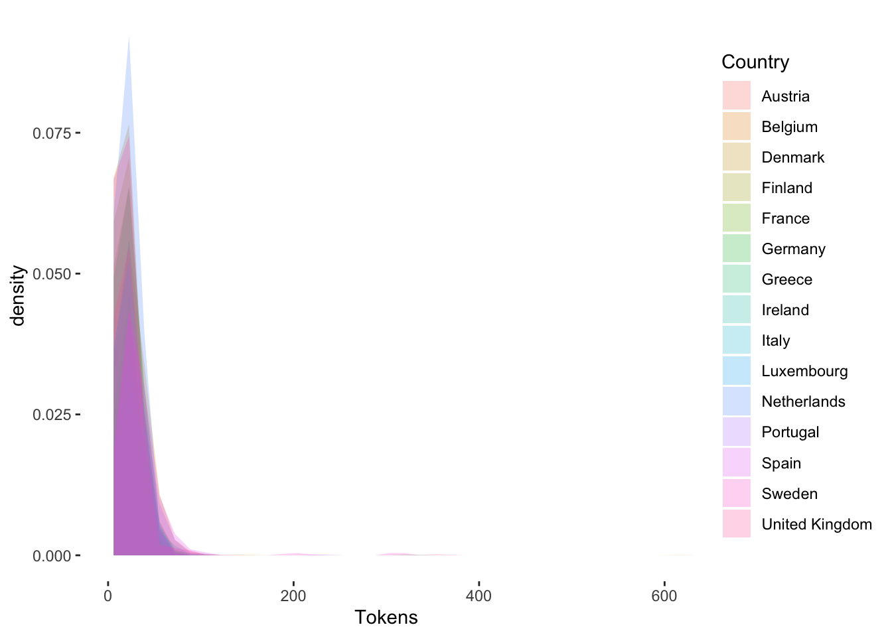
Figure 3: Distribution of document length by country
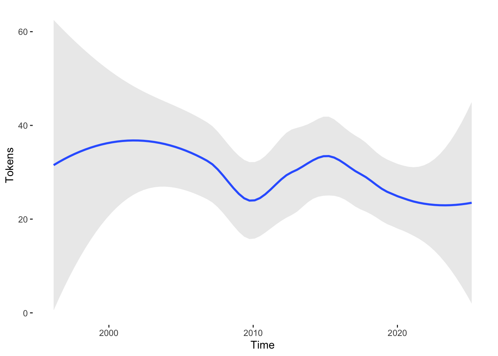
Figure 4: Distribution of document length by time
Data balance
Before we perform automated text analysis, it is important to inspect the corpus. Since we are performing sentiment analysis and structural topic model on a set of manifestos stratified by periodized time covariate, we might want to ensure covariate balance to ensure robustness.
From Table 3, the period between 2004-2014 and 2015-2025 are roughly balanced, but the period 1995-2003 is made up with less documents than the other two. We also note that the period is the shortest among the three, with less elections and parties in between. There are also problems of data availability, as time and translation coverage differs across countries in the Manifesto Corpus. We show this in the table below:
Table 4: Balance of documents by time and country
# checking class balance in each covariate levelsp.c.tab <-table(all.imm.corpus$countryname, all.imm.corpus$binned_time)colnames(p.c.tab) <-c("1995-2003", "2004-2014", "2015-2025")p.c.tab
We recognize that covariate distribution may be important in our regression analysis, which estimate the relationship between timeframes (migration events) and topic prevalence, we also concur that this is one limitation within the scope of this study.
Text cleaning and tokenizing with quanteda
For automated text analyses, we need to clean our text data from irregularities. We can do this with the stm package built-in function. However, opting for more flexibility, we decided to go with quanteda. Bearing our question in mind, we expect our topics to be conceptual framings that compose of single meaningful morphemes. As such, we remove numerics and special characters like punctuation are not part of our search. We also stem the words to normalize them to an approximate common base and boosts efficiency of our model. We considered the appropriateness of lemmatization but decided against it for ease in implementation and run time issues. We perform these cleaning steps in the code chunk below and produce both a quanteda tokens object and a document-feature matrix.
# create a dataframe of subsetted corpusall.imm.corpus.df <-convert(all.imm.corpus, to ="data.frame")# clean and tokenize corpusall.imm.tokens <- all.imm.corpus %>%#we use the outliers removedtolower() %>%tokens(remove_punct = T,remove_symbols = T,remove_numbers = T) %>%tokens_remove(stopwords("en")) %>%tokens_remove(pattern ="^[A-Za-z0-9]$", valuetype ="regex") %>%# remove single-character tokenstokens_remove(pattern ="[^\\p{L}\\p{N}]+", valuetype ="regex") %>%# remove special characterstokens_wordstem(language ="en") # stem words# create document-feature matrix with tokens all.imm.dfm <- all.imm.tokens %>%dfm()
Analysis
Sentiment analysis
To gauge the sentiments surrounding migration in centrist manifestos, we perform a sentiment analysis with the ‘NRC Emotion Intensity Lexicon (NRC-EIL)’. As noted in Section 2, NRC lexicon allows the detection of corpus and document-level sentiment. In this study, we intend to explore the overall change in patterns of sentiment surrounding the subject of migration. Hence, we examine the aggregate sentiment over the entire body of text, stratified by time and countries. The code chunk below implements sentiment analysis using the NRC lexicon package ported via tidytext.
# obtain nrc sentiment packagenrc_lex <-get_sentiments("nrc")# filter(sentiment %in% c("positive", "negative")) # 5624 wordsnrc_dict <-dictionary(split(nrc_lex$word, nrc_lex$sentiment)) # reshape to quanteda dictionary# run sentiment analysisall.imm.sentiment.nrc <- all.imm.corpus %>%tolower() %>%tokens(remove_punct = T,remove_symbols = T,remove_numbers = T) %>%tokens_remove(stopwords("en")) %>%tokens_remove(pattern ="^[A-Za-z0-9]$", valuetype ="regex") %>%# remove single-character tokenstokens_remove(pattern ="[^\\p{L}\\p{N}]+", valuetype ="regex") %>%# remove tokens made of special chars dfm() %>%#apply dictionary to dfmdfm_lookup(nrc_dict) %>%convert(to ="data.frame")all.imm.corpus.df <- all.imm.corpus %>%convert(to ="data.frame")# cbind sentiment analysis output with original dataframeall.imm.sentiment.nrc <- all.imm.sentiment.nrc %>%inner_join(all.imm.corpus.df, by ="doc_id")# pivot the merged dataframe for visualization and summariesall.imm.sentiment.nrc.long <- all.imm.sentiment.nrc %>%pivot_longer(-c(1,12:34), names_to ="senti", values_to ="count")# summarize the count of sentimentssentiment.sum.nrc <- all.imm.sentiment.nrc.long %>%group_by(senti, year, countryname) %>%summarise(senti_count =sum(count), .groups ="drop") %>%mutate(senti_group =case_when( senti %in%c("positive", "negative") ~"polarity",TRUE~"emotion")) %>%group_by(year, countryname, senti_group) %>%mutate(senti_prop = senti_count /sum(senti_count)) %>%ungroup() %>%as.data.frame()
Table 5: Table of sentiment summary
head(sentiment.sum.nrc) # view the nrc sentiment summaries
With NRC, we count the words classified as an emotion within each document. Grouping the documents by country and time, we then count up the NRC lexicon matches expressing an emotion category in each country at each year, we store this as senti_count. For instance, we count how many words are in the category “anger” across all documents in Spain in 1996, and so forth (see Table 5). We also normalize senti_count as a share of total in senti_prop. We plot the sentiment distribution by year and country in ?@fig-senti1, fitted with a local polynomial curve to visualize its smoothed trend non-linearly.
# plot sentiment summary of emotion classification ggplot(sentiment.sum.nrc[sentiment.sum.nrc$senti_group =="emotion",],aes(x = year, y = senti_count, color = senti)) +geom_point(alpha = .4) +geom_smooth(alpha = .2, linewidth = .8, se = T, method ='loess') +labs(title ="Count of sentiment over time") +theme_bw()# plot share of sentiment across timeggplot(sentiment.sum.nrc[sentiment.sum.nrc$senti_group =="emotion",],aes(x = year, y = senti_prop, color = senti)) +geom_point(alpha = .4) +geom_smooth(alpha = .2, linewidth = .8, se = T, method ='loess') +labs(title ="Share of sentiment over time") +theme_bw()
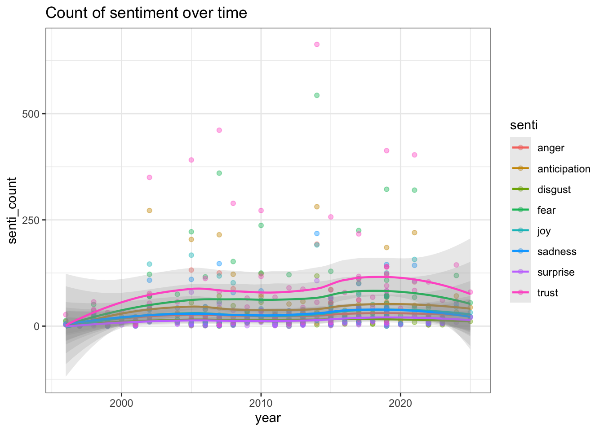
Figure 5: Summary of sentiments by emotion classification over time
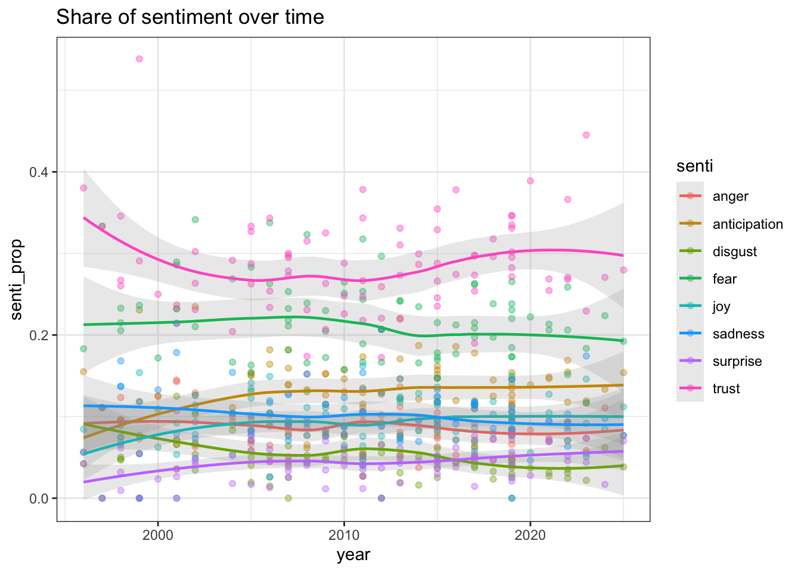
Figure 6: Normalized sentiments by emotion classification over time
# plot sentiment summary of polarityggplot(sentiment.sum.nrc[sentiment.sum.nrc$senti_group =="polarity",],aes(x = year, y = senti_count, color = senti)) +geom_point(alpha = .4) +geom_smooth(alpha = .2, linewidth = .8, se = T, method ='loess') +labs(title ="Count of sentiment over time") +theme_bw()ggplot(sentiment.sum.nrc[sentiment.sum.nrc$senti_group =="polarity",],aes(x = year, y = senti_prop, color = senti)) +geom_point(alpha = .4) +geom_smooth(alpha = .2, linewidth = .8, se = T, method ='loess') +labs(title ="Share of sentiment over time") +theme_bw()
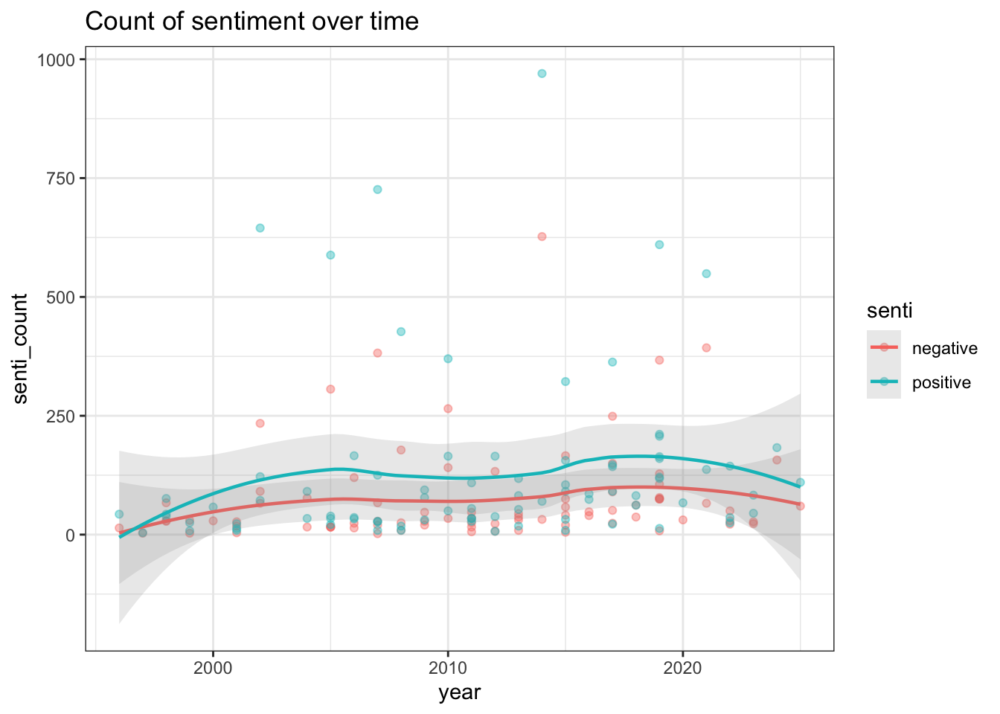
Figure 7: Summary of sentiments by polarity over time
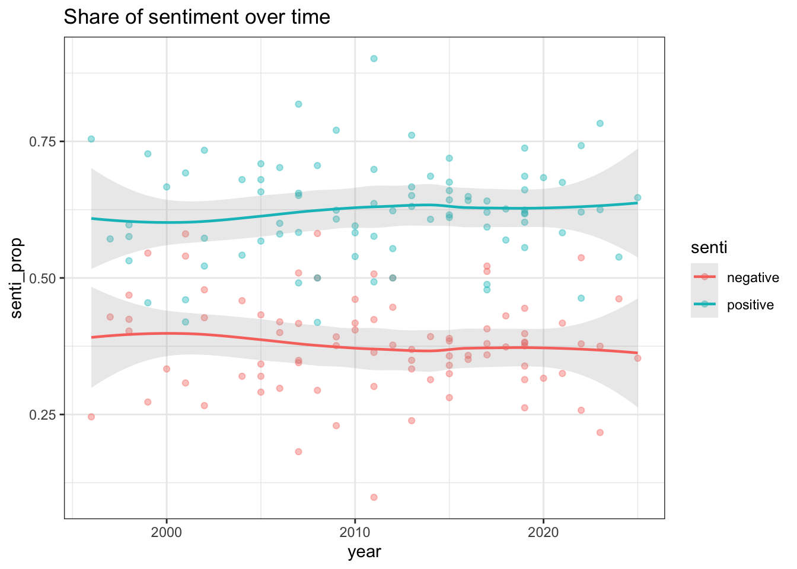
Figure 8: Normalized sentiments by polarity over time
?@fig-senti1 depicts the total number of NRC lexicon matches in each country over years (each data point is a sentiment count in each country). The figure shows that “trust” is consistently the highest across all countries throughout the whole period, followed by “fear” and “anticipation”. The normalized plot shows the proportional trend of sentiments. Smoothed over time, we can see similar patterns, with a small drop of “trust” as a proportion prior to 2000 and subsequent rise before 2020. We also see a minor improvement of “anticipation” and “joy” between 1995 and mid-2000s, while “disgust” have steadily decreased.
?@fig-senti2 shows polarity comparing the positive versus negative sentiment trend throughout time. It can be seen that the positive curve sits above the negative curve throughout the whole period. As a proportion, positive sentiments also stay consistently above more than half of all sentiments over time. While negative sentiments are have constituted 30% of all sentiments in each country over time.
We can infer from the results that, in terms of election manifestos, centrist parties tend to articulate migration in a positive light. While overall polarity The words used to describe, and/or frame migration are more often expressing trust, followed by fear and anticipation.
We bear caveat that manifesto are election programs function both as a positional publication and an outline of policies and governing aims. The nature of manifestos might suggest more neutrality than other types of political communications, given the aim and audience of manifestos, they might not reflect the overall sentiments used by centrist parties throughout their corpora of political messaging, which are not treated in this study.
Structural topic model
In this section, we fit a structural topic model over the corpus to uncover the latent topics, in this case, framings surrounding migration in centrist party election manifestos. We do this with the stm package developed by Roberts et al. (2019) for implementation of structural topic model with LDA in R.
First, we convert the quanteda corpus object to an stm object that can be passed into the modelling function. Since stm read the corpus in three separate objects: the documents documents, vocabulary vocab and metadata meta, we store them as part of a list all.imm.tstm for ease of access. We also remove the rare terms that occur in less than five documents to improve model efficiency.
# convert quanteda dfm for stm useall.imm.tstm <-convert(all.imm.dfm, to ="stm")# prepare documents for stm, remove rare terms that occur in less than 5 documentsall.imm.tstm <-prepDocuments(all.imm.tstm$documents, all.imm.tstm$vocab, all.imm.tstm$meta, lower.thresh =5)
Removing 3468 of 5103 terms (6283 of 77607 tokens) due to frequency
Your corpus now has 6483 documents, 1635 terms and 71324 tokens.
Second, we run the structural topic model with k = 14 a periodized time binned_time covariate as topic prevalence covariate. Our model specification assumes that migration events explains the distribution of topics in our corpus. The number of topics are validated in Section 5.3. Following Roberts et al. (2016), we use method of moments (spectral) initialization to ensure consistent results.
We also estimate a linear model based on our topic model output. The regression model is described in detail in Section 5.5. We chunk the three modelling step as a function run_stm for reproducibility and readability. The function stores three outputs: the topic model stm_model, summary of the topic model stm_summary and the regression results stm_preds as a list.
# function that runs stm over input corpus and output a model, a summary of fitted topics and estimate relationships between metadata and topicsrun_stm <-function(tstm){# fit topic model stm_model <-stm(documents = tstm$documents,vocab = tstm$vocab,K =14,prevalence =~ binned_time,max.em.its =75,data = tstm$meta,init.type ="Spectral",verbose =FALSE,seed =42)# output topic summary stm_summary <-summary(stm_model)# estimate covariate effects stm_preds <-estimateEffect(formula =1:14~ binned_time,stmobj = stm_model,metadata = tstm$meta,uncertainty ="Global")# return everything as a named listlist(stm_model = stm_model,stm_summary = stm_summary,stm_preds = stm_preds )}
The chunk below implements run_stm and save the results as all.imm.stm.
set.seed(42)# fit structural topic model over prepped corpusall.imm.stm <-list()all.imm.stm <-run_stm(all.imm.tstm)
A topic model with 14 topics, 6483 documents and a 1635 word dictionary.
Model validation
To ensure our hyperparameter selection is robust, we iteratively estimate the model for values of k ranging from 6 to 20 in steps of 2, employing the searchK function native to stm. The function returns diagnostics such as held-out-likelihood estimates, residuals and semantic coherence in a visual aid. Aside from the out-of-the-box diagnostics, we produce a coherence-exclusivity plot for ease of interpretation.
set.seed(42)# run out of the box model validation diagnostic function# we run the model from k = 6 to k = 20, iterated by 2.all.imm.stm.val <-searchK(all.imm.tstm$documents, all.imm.tstm$vocab, K =c(6,8,10,12,14,16,18,20),prevalence =~ binned_time, data = all.imm.tstm$meta,seed =42,verbose = F)
# extract the validation resultsall.imm.stm.val.df <-lapply(all.imm.stm.val$results, unlist) %>%as.data.frame()# plot exclusivity and coherence measures ggplot(all.imm.stm.val.df) +geom_point(aes(y = semcoh, x = exclus, color =as.factor(K))) +labs(title ="Semantic Coherence and Exclusivity by k", x ="exclusivity", y ="coherence")
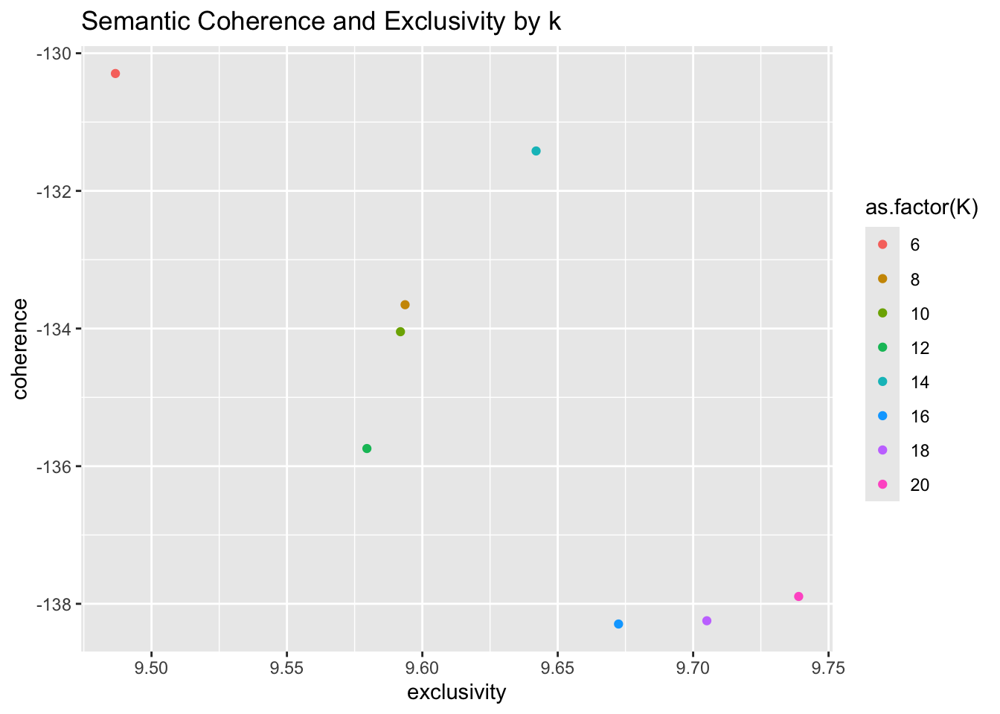
Figure 10: Coherence-Exclusivity plot
From the results of the model validation step (Figure 10), we see that semantic coherence is highest at k = 6, and exclusivity highest when k = 20. We use the balanced middle between the range of 10 to 18. We decided to select k = 14 for our hyperparameter as the topic quality stabilizes after k = 14. We also select k = 14 as we are biased towards semantic coherence and adequacy of topic number for the purpose of interpretation.
Description of migration framings
To explore the type of frames around immigration discourses, we look at the topic prevalence distribution of our corpus.
plot(all.imm.stm$stm_model, type ="summary")
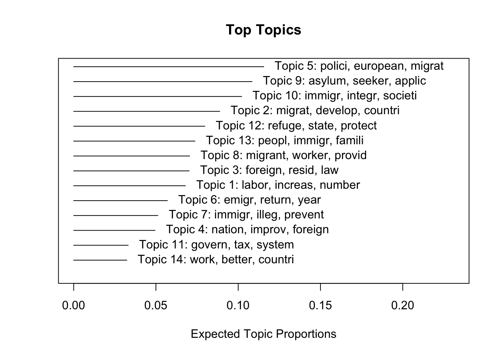
Figure 11: Summary of topic
Figure 11 shows the rank order of topic prevalence in our model. The y-axis shows \(\theta\), of which topic 5, 9, 10 and 2 compose more . We can reproduce it in a density plot as below.
# reshape topic model output to topic-word matrixtop_words <-tidy(all.imm.stm$stm_model, matrix ="beta") %>%group_by(topic) %>%slice_max(beta, n =30) %>%ungroup()# plot wordcloud to summarize topic-word distributionggplot(top_words, aes(label = term, size = beta)) +scale_size_area(max_size =10) +geom_text_wordcloud(rm_outside = T) +facet_wrap(~ topic, ncol =4, scales ="free") +labs(title ="STM Topic Wordclouds", subtitle ="Top 30 words per topic", size ="Word probability") +theme_minimal()
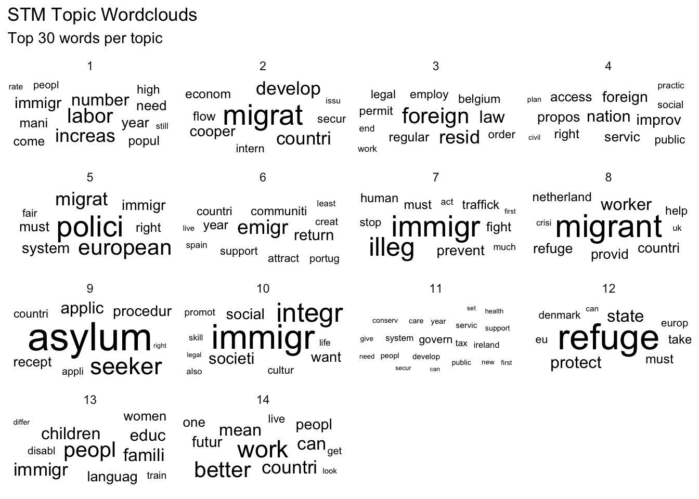
Figure 12: Word cloud of top 30 words by topic (beta)
Figure 12 give an overview of the fitted topics and their topic-word distribution. The size of the terms vary by the topic-word probability, \(\beta\), which suggest the likelihood of a word being assign to the topic. Aside from \(\beta\), the structural topic model returns three other metrics that indicate topic-word exclusivity: FREX, Lift and Score.
FREX “weights words by their overall frequency and how exclusive they are to the topic”, whereas Lift “weights words by dividing by their frequency in other topics, therefore giving higher weight to words that appear less frequently in other topics”, and Score “divides the log frequency of the word in the topic by the log frequency of the word in other topics.” (Roberts et al. 2019)
The words indicated with high topic exclusivity shows that these topics are probabilistically distinct from one another. Below, we inspect the 20 top representative documents for the three selected topics.
# for example, we inspect the representative words by labelTopics(all.imm.stm$stm_model, topics =7)
findThoughts(all.imm.stm$stm_model, all.imm.corpus.df$text, topics =c(7, 10), n =5)[[2]]
$`Topic 7`
[1] "The PSOE, knowing that organized crime -in its various forms of drug trafficking, money laundering, corruption, major tax frauds, currency counterfeiting, organized robberies, human trafficking, control of illegal immigration networks, etc. - constitutes the second most serious threat to our national and EU security, we have set the fight against organized crime as an operational priority for the Ministry of the Interior."
[2] "The fight against illegal immigration must be stepped up, in particular against the smugglers who unscrupulously send hundreds of thousands of people, mainly on makeshift boats, across the Mediterranean."
[3] "for the purposes of combating crime, in particular aiding illegal immigration, trafficking in human beings, drugs and arms, smuggling and counterfeiting;"
[4] "We continue to fight against illegal immigration, especially human trafficking and smuggling, because it is degrading."
[5] "Continuing and stepping up the fight against illegal immigration, human smuggling and trafficking"
$`Topic 10`
[1] "We appreciate and support the manifold contributions of Muslim clubs and associations to our community - for example, to the integration of Muslim immigrants and their descendants into our society, as well as to the dialogue between cultures and religions."
[2] "It is a matter of course for us that we want to uphold these values and bring them closer to the people who immigrate to our country or expect them to be interested in our culture and respect our way of life."
[3] "This requires, on the one hand, a welcoming culture in Austria and, on the other hand, the willingness of immigrants to want to integrate."
[4] "PASOK has shown that it believes in the contribution of immigrants to the country's economy, that it does not punish diversity but on the contrary considers it an element of enrichment of Greek society."
[5] "We understand integration as a two-way process of mutual adaptation that requires the active participation of all citizens: immigrants and Spaniards;"
To further analysis, we evaluate whether the fitted topics are meaningful representation of what we intend to measure. Working in groups of two, manually inspecting both the topic-word summary through labelTopics and the original text of the top 20 representative documents with the findThoughts function. We then discuss and validate the interpretation of the topic and name the topics. We describe the interpretations of all 14 fitted topics or frames in Table 6.
For reasons of brevity, we do not include the full output, see ?@lst-inspecttopic for an instance of our workflow.
Does migration events influence the framing of migration by center parties?
We note that the migration trend in the European Union is influenced by two external events, one during the 2004 EU enlargement when 10 more member states are gained, and one during year 2015 when some member states experienced spikes in migrant inflow.
Similar to intervention analysis, we assign year 2015 as a cutoff point to indicate the start of migrant crisis. We treat the manifestos published post-2015 as the “treatment” group where migration from refugee crisis has influenced political discourse, post-2004 as a second reference group where enlargement has influenced political discourse, and pre-2004 as first reference group where migration has not influenced political discourse.
As described in Section 2, we view each topic as a frame, and the topic prevalence (expected topic proportion, \(\theta\)) as a measure of frame salience. In other words, a quasi-sentence is a mixture of frames. \(\theta\) describes the distribution of frames in our corpus.
We can then set up the regression as a comparison of group means, using the periodized time covariate, we can test the relationship between the migration event and the topic prevalence \(\theta\). We perform this estimation with estimateEffect() in ?@lst-runstm.
Our hypothesis is formulated as:
\(H_{0}\): There is no significant difference between means of \(\theta\) for topic post-2015 and pre-2004.
\(H_{1}\): There is significant difference between means of \(\theta\) for topic post-2015 and pre-2004.
We produce the estimates and their uncertainty measure in Table 7.
# format table to prontable reg_table %>%gt(rowname_col ="term") %>%tab_header(title ="Effect of migrant crisis (period) on Topic Prevalence",subtitle ="Structural Topic Model (STM)") %>%cols_align(align ="center", everything()) %>%tab_source_note(source_note =md("*Standard errors in parentheses.* *Significance levels:* *** p < 0.001, ** p < 0.01, * p < 0.05"))
Table 7: Regression results
Effect of migrant crisis (period) on Topic Prevalence
Structural Topic Model (STM)
Topic 1
Topic 2
Topic 3
Topic 4
Topic 5
Topic 6
Topic 7
Topic 8
Topic 9
Topic 10
Topic 11
Topic 12
Topic 13
Topic 14
(Intercept)
0.076*** (0.008)
0.068*** (0.008)
0.073*** (0.008)
0.064*** (0.007)
0.112*** (0.010)
0.049*** (0.007)
0.086*** (0.008)
0.030*** (0.007)
0.093*** (0.010)
0.122*** (0.009)
0.027*** (0.006)
0.111*** (0.010)
0.063*** (0.009)
0.026*** (0.003)
2004–2014
-0.004 (0.009)
0.006 (0.008)
0.014 (0.009)
0.007 (0.008)
-0.016 (0.010)
0.010 (0.008)
-0.019* (0.009)
0.023** (0.007)
0.012 (0.010)
-0.020* (0.010)
0.007 (0.007)
-0.056*** (0.010)
0.031*** (0.009)
0.005 (0.003)
2015–2025
-0.008 (0.008)
0.022* (0.009)
-0.012 (0.009)
-0.014 (0.008)
-0.012 (0.010)
0.021** (0.008)
-0.031*** (0.009)
0.058*** (0.007)
-0.004 (0.010)
-0.042*** (0.010)
0.037*** (0.007)
-0.019 (0.010)
-0.001 (0.009)
0.005 (0.003)
Standard errors in parentheses. Significance levels: *** p < 0.001, ** p < 0.01, * p < 0.05
From the regression result (Table 7), several topics showed statistically significant changes in prevalence in the post-2015 relative to the baseline period, while others remained stable.
Positive effects. Topic prevalence was significantly higher in the post-2015 period for Topic 2 (\(\beta\) = 0.021, SE = 0.009, p < .05), Topic 6 (\(\beta\) = 0.021, SE = 0.008, p < .01), Topic 8 (\(\beta\) = 0.058, SE = 0.007, p < .001), and Topic 11 (\(\beta\) = 0.037, SE = 0.007, p < .001). Among these, Topic 8 exhibited the largest increase in expected prevalence, indicating a substantial rise in prominence during the later period.
Negative effects. In contrast, topic prevalence declined significantly for Topic 7 (\(\beta\) = -0.031, SE = 0.009, p < .001) and Topic 10 (\(\beta\) = -0.042, SE = 0.010, p < .001), suggesting a marked decrease in these framings topics over time.
For the remaining topics (Topics 1, 3, 4, 5, 9, 12, 13, and 14), the estimated effects of the post-2015 period were not statistically distinguishable from zero (p > .05), indicating relative stability in topic prevalence across time periods.
While it is important to take empirical outcomes into account, we also note the need for coherence in meaning in aiding our interpretation. We decided to drop topic 4, 8, 9, 11 and 14 from our discussion due to incoherence and difficulty in parsing meaningful interpretation from the set of words and documents related to the topic. Topics excluded from discussion is noted in Table 6. We do not preclude chances of inaccuracy and low robustness in our model, and hope further research can be taken once availed with better resources.
?@fig-ploteff visualizes the point estimate difference of each topic relative to the reference period pre-2004 period.
plot(all.imm.stm$stm_preds, "binned_time", model = all.imm.stm$stm_model, method ="difference", cov.value1 ="2", cov.value2 ="1", verbose = F)title("Effect of post-2015 on topic prevalence compared to pre-2015 period")plot(all.imm.stm$stm_preds, "binned_time", model = all.imm.stm$stm_model, method ="difference", cov.value1 ="2", cov.value2 ="0", verbose = F)title("Effect of post-2015 on topic prevalence compared to pre-2004 period")
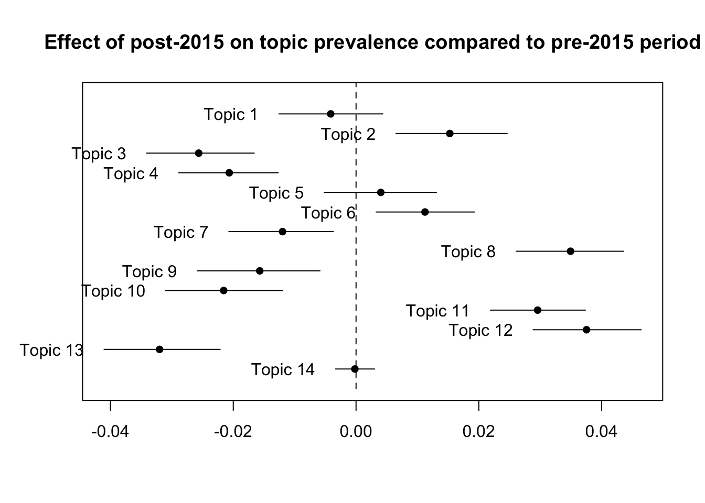
Figure 13: Effect of 2015 on topic prevalence compared to pre-2015 period
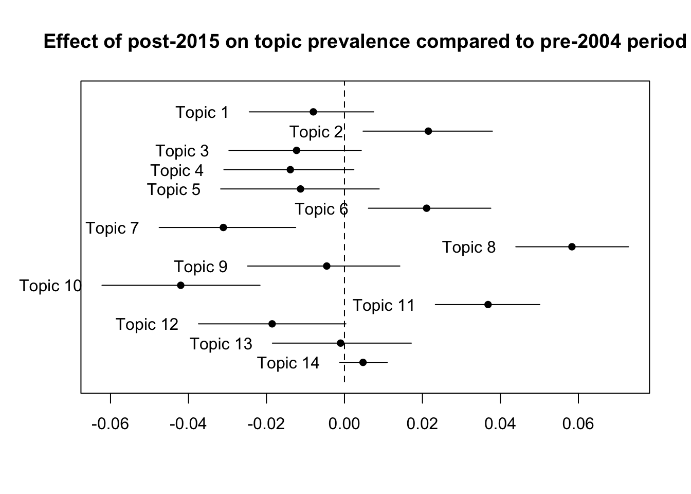
Figure 14: Effect of 2015 on topic prevalence compared to pre-2004 period
From the regression analysis, the distribution of topic prevalence can only partially predicted by the 2015 migrant crisis. We can infer that the 2015 migrant crisis has uneven effect on topic prevalence, hence framings of migration in centrist parties’ discourse of migration found in election manifestos.
Discussion
After describing the characteristics of each topic, we can infer how migration is framed by considering the relations between the latent topics to the overall discourse of the centrist parties on migration.
While we draw on the framework of securitization and humanitarian dichotomy, we found limits in categorizing them in strict binary. We show that migration is more complexly framed in centrist discourse, as opposed to simple dichotomies.
We identify the framings of migration within two articulatory systems, understood as recurrent and structured ways in which migration is discursively linked to other social categories, problems, or policy logics to produce meaning (Torfing 2003). We view this as interlocuting set or system of frames.
The first articulatory system carves out migration as a distinct enclave or “social other”, relying on language of marginalization, legitimization and exclusion. Within this set of frames, immigrants are framed as a vulnerable group linked to other known vulnerable groups such as social minorities (e.g., disabled people; topic 13). Through this articulation, centrist parties distinguish immigrants from the body of the society, but do so as a departure for legitimizing institutional support and humanitarian aid.
In parallel to this articulation is a drawing of strict line between legal and illegal immigrants (topic 3, 7 and 10). These topics are represented by documents urging for international and domestic efforts in addressing “inhumane trafficking gangs” and framings that invoke immigrants simultaneously as groups vulnerable to human trafficking. Legality is employed as a tool of classification, legitimization and exclusion, they encourages interpretation of migration in the legal/illegal binary, and inform structures of duties and action. Illegal migration are addressed through international and domestic efforts while legal migrants should be integrated in the society of host country (topic 10). By distinguishing between legal/illegal migration, centrist parties are able to position themselves in the middle of the political spectrum. Rather than absolute exclusion or inclusion, they conditionally include some migrants and exclude others.
From the regression analysis, this system of frames have either shown decrease in prevalence or no statistically significant changes in the post-2015 migrant crisis period. We infer this to a shift away of centrist parties from framing migration in terms of marginalization, legitimization and exclusion. However, we note that these reduction are on a whole minor (3% to 4% relative to reference period).
One potential explanation of this diminishing could be in the outcomes of intergration policies. For example, Hansen and Olsen (2023) observed some success in long-term integration programs. Further research are needed to the effects of integration policies on political discourses.
The second articulatory system points to the embeddedness of the migration within a global system, which encourage the definition of migration as a problem of the commons. Employing language of commons, equity and solidarity, this set of frames call for a collaborative approach to address the issues arising from migration. The topics frame migration as linked to a list of European or international problems, such as climate change or global poverty (topic 2). In association, they call for sharing of responsibility among countries by highlighting limited national capacities (topic 5 and 12). Documents in these topics appeal to the idea that migration “require new international consensus and intensive diplomatic cooperation.”
An auxiliary framing can be found in the interpretation of migration as an uneven circulation of labor across borders. This framing can be seen in the references to emigration as a form of labor outflow, which have been highlighted by studies on “brain-drain” (Khan 2021). Such framings employ language of citizenship and nationhood, couched in appeals to diasporic communities’ connection to nation of origins and repatriation policies (topic 6). The framing of migration in terms of labor market exchanges also seen in positive framings of immigration as a solution to domestic labour market woes, conditional on legal means (topic 1). These framings promote an interpretation of migration as a realistic, rational cost-benefit bargain of resource exchange.
By embedding immigration within broader European and global challenges and emphasizing shared responsibility (between countries and citizens), centrists distinguish themselves from both far-left and far-right positions, yet reproduce a conservative problem-framing grounded in realist logic.
The increase in prevalence of this set of frames (topic 2 and 6) speaks to the shift towards a realist framing of migration as a problem of commons, which appeals to shared responsibility in the context of resource scarcity.
Overall, centrist parties articulate immigration through a conditional and realist approach that strategically combines securitization and humanitarian framings. Immigrants are constructed as vulnerable subjects that need support and integration, while simultaneously being differentiated through legal status or economic utility. Moreover, by embedding immigration within broader European and global challenges and emphasizing shared responsibility, centrists distinguish themselves from both far-left and far-right positions, yet still reproduce a conservative logic of regulated inclusion.
Conclusion
Our study demonstrates that centrist framing of migration transcends the securitization-humanitarian binary. Using NRC lexicon sentiment analysis, we show that the affective dimensions of migration framings were roughly stable over time, despite migration events. Centrist framings of migration are also predominantly positive, underscored by emotions like trust, followed by fear and anticipation.
In our structural topic model, we fitted 14 topics that are interpreted as frames surrounding the subject of migration in centrist political discourse. These framings are varied, ranging from labor market imbalances, global challenges to legality. The overall expected topic proportion is prevailed by topic 5 and 9 (Table 6).
In our regression analysis, we test the relationship between migration events and topic prevalence using model parameter \(\theta\) as a dependent variable and periodized timeframe as independent variable. We found that topic prevalence are only partially predicted by migration event, and their effects are heterogenous.
Combining the exploratory analysis and regression, we identify two distinct articulatory systems, we find that centrist parties strategically combine securitization and humanitarian framings to negotiate a position distinct from their far-left and far-right counterparts, mainly through a realist approach.
The first system constructs migration as a “social other,” utilizing a logic of regulated exclusion where humanitarian support is contingent upon legality. The second system embeds migration within a global “problem of the commons.” By linking migration to international crises like climate change and labor market fluctuations, centrists frame the issue as a matter of resource management and “brain drain” rather than purely one of human rights.
Ultimately, the post-2015 shift toward this realist framing suggests a tactical change. By emphasizing shared responsibility and the rational cost-benefit of labor exchange, centrist parties successfully distinguish themselves from the ideological extremes of the left and right. However, this “middle ground” remains anchored in a conservative logic of conditional inclusion, where the migrant’s value is increasingly defined by their legality and economic utility within a global system.
Limitations
It should be mentioned that the nature of the Manifesto Project data makes research questions like ours sensitive to methodological choices. First, we recognize the limitations of topic modelling. As Brookes and McEnery (2019) suggests, it involves substantial researcher judgement and the results become sensitive to pre-processing decisions, e.g. stopword lists and stemming. Topic models are hence best treated as exploratory- the resulting topics are resulting word co-occurrence rather than directly observed themes. Therefore, they stress the importance that any credible labeling requires a robust theoretical rationale.
In our current workflow, the STM is estimated on 6483 segment-level documents drawn from 283 unique manifestos. The choice to go with segment-level documents or quasi-sentences (see ) instead of unique manifestos was made because manifesto-level analysis can lead to insufficient data points. This approach may not fulfil the independence assumption, we cannot preclude that the statements are correlated from each other. The number of documents across manifestos also vary, simply due to the keyword selection method, suggesting that some manifestos may carry more weight in the STM than others.
Another limitation acknowledged in our methodology, is that we pool multiple European countries and interpret their manifestos as one aggregated “collective voice.” This should be treated cautiously because post-2015 differences can be confounded by compositional instability across time bins. Our balance diagnostics in Table 4 show that country representation is uneven, with some countries contributing disproportionately in specific periods (most notably Belgium in 2004–2014 and the UK after 2015). This means that the estimated “time effects” may partly reflect shifts in which countries dominate the corpus, not only within-country changes in framing.
GenAI declaration
GenAI used primarily in producing this assigment include OpenAI GPT-5.2 model and Google Gemini 3. GenAI is used in debugging and generating suggestions for code linting, such as in improving the list storage in wrapping multiple processes, small degree of dplyr operations. GenAI is also used in brainstorming ideas and troubleshooting minor aspects of research design related to model specification, for example, the model assumptions of stm in combination with regression, the balance criteria working with two-step estimation, as well as suggesting means of extracting model outputs into dataframe for visualization. In the final stages of the research, results are partially passed to genAI to prompt potential gaps in research, otherwise overlooked by human-identified. All code and text are human-verified to ensure no machine errors.
References
Alonso, Sonia, and Sara Claro da Fonseca. n.d. Immigration, Left and Right.
Bandov, Goran, and Gabrijela Gosovic. 2018. “Humanitarian Aid Policies Within the European Union External Action.”Journal of Liberty and International Affairs 4 (2): 25–39. https://e-jlia.com/index.php/jlia/article/view/120.
Bauder, Harald, and Lorelle Juffs. 2020. “‘Solidarity’ in the Migration and Refugee Literature: Analysis of a Concept.”Journal of Ethnic and Migration Studies 46 (1): 46–65. https://doi.org/10.1080/1369183X.2019.1627862.
Boswell, Christina, and Dan Hough. 2008. “Politicizing Migration: Opportunity or Liability for the Centre-Right in Germany?”Journal of European Public Policy 15 (3): 331–48. https://doi.org/10.1080/13501760701847382.
Brookes, Gavin, and Tony McEnery. 2019. “The Utility of Topic Modelling for Discourse Studies: A Critical Evaluation.”Discourse Studies 21 (1): 3–21. https://doi.org/10.1177/1461445618814032.
Cantat, Celine. 2016. “Rethinking Mobilities: Solidarity and Migrant Struggles Beyond Narratives of Crisis.”Intersections. East European Journal of Society and Politics 2 (4). https://doi.org/10.17356/ieejsp.v2i4.286.
Favell, Adrian. 2001. Integration Policy and Integration Research in Europe: A Review and Critique.
García Agustín, Óscar, and Martin Bak Jørgensen, eds. 2016. Solidarity without borders: Gramscian perspectives on migration and civil society. Reading Gramsci. Pluto Press.
Gillings, Mathew, and Andrew Hardie. 2023. “The Interpretation of Topic Models for Scholarly Analysis: An Evaluation and Critique of Current Practice.”Digital Scholarship in the Humanities 38 (2): 530–43. https://doi.org/10.1093/llc/fqac075.
Greussing, Esther, and Hajo G. Boomgaarden. 2017. “Shifting the Refugee Narrative? An Automated Frame Analysis of Europe’s 2015 Refugee Crisis.”Journal of Ethnic and Migration Studies 43 (11): 1749–74. https://doi.org/10.1080/1369183X.2017.1282813.
Grimmer, Justin, Margaret E. Roberts, and Brandon M. Stewart. 2022. Text as Data: A New Framework for Machine Learning and the Social Sciences. Princeton University Press.
Güler, Kamber. 2019. “Discursive Construction of an Anti-Immigration Europe by a Sweden Democrat in the European Parliament.”Migration Letters 16 (3): 429–39. https://doi.org/10.59670/ml.v16i3.632.
Hansen, Michael A., and Jonathan Olsen. 2023. “Identity and Belonging: Emotional Assimilation in Two Immigrant Communities in Germany.”Journal of International Migration and Integration 24 (4): 1795–815. https://doi.org/10.1007/s12134-023-01035-7.
Hilhorst, Dorothea, Maria Hagan, and Olivia Quinn. 2021. Reconsidering Humanitarian Advocacy Through Pressure Points of the European ‘Migration Crisis’. June. https://doi.org/10.1111/imig.12802.
Hong, Liangjie, and Brian D. Davison. 2010. “Empirical Study of Topic Modeling in Twitter.” (New York, NY, USA), SOMA ’10, July 25, 8088. https://doi.org/10.1145/1964858.1964870.
Jaskulowski, Krzysztof. 2019. “The Securitisation of Migration: Its Limits and Consequences.”International Political Science Review 40 (5): 710–20. https://doi.org/10.1177/0192512118799755.
Khan, Jawaria. 2021. “European Academic Brain Drain: A Meta-Synthesis.”European Journal of Education 56 (2): 265–78. https://doi.org/10.1111/ejed.12449.
Laureate, Caitlin Doogan Poet, Wray Buntine, and Henry Linger. 2023. “A Systematic Review of the Use of Topic Models for Short Text Social Media Analysis.”Artificial Intelligence Review 56 (12): 14223–55. https://doi.org/10.1007/s10462-023-10471-x.
Lehmann, Pola, Simon Franzmann, Denise Al-Gaddooa, et al. n.d. Manifesto Corpus.
Roberts, Margaret E., Brandon M. Stewart, and Dustin Tingley. 2016. Navigating the Local Modes of Big Data: The Case of Topic Models. 1st ed. Edited by R. Michael Alvarez. Cambridge University Press. https://doi.org/10.1017/CBO9781316257340.004.
Roberts, Margaret E., Brandon M. Stewart, and Dustin Tingley. 2019. “Stm : An R Package for Structural Topic Models.”Journal of Statistical Software 91 (2). https://doi.org/10.18637/jss.v091.i02.
Sbalchiero, Stefano, and Maciej Eder. 2020. “Topic Modeling, Long Texts and the Best Number of Topics. Some Problems and Solutions.”Quality & Quantity 54 (4): 1095–108. https://doi.org/10.1007/s11135-020-00976-w.
Torfing, Jacob. 2003. New theories of discourse: Laclau, Mouffe and Žisžek. Repr. Blackwell.
Veri, Francesco, and Franziska Maier. n.d. “Migration Discourses from the Radical Right: Mapping and Testing Potential for Political Mobilization.”Political Psychology n/a (n/a). https://doi.org/10.1111/pops.70004.
Zaviršek, Darja. 2017. “The Humanitarian Crisis of Migration Versus the Crisis of Humanitarianism: Current Dimensions and Challenges for Social Work Practice*.”Social Work Education 36 (3): 231–44. https://doi.org/10.1080/02615479.2017.1303043.